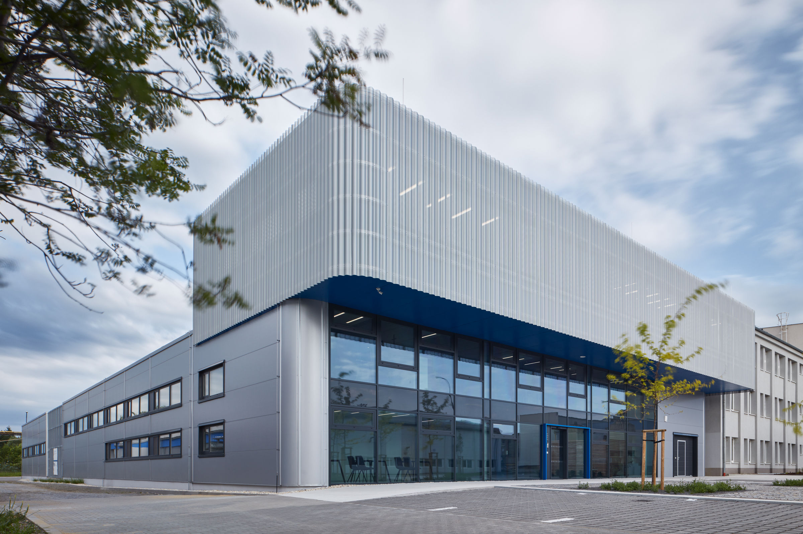

Solusi Big Data di Indonesia
Big data adalah sebuah istilah yang digunakan untuk menggambarkan set data dalam ukuran yang sangat besar yang mungkin secara komputasi dianalisis untuk menemukan pola, trend, asosiasi, terutama dalam hubungannya terhadap interaksi dan tindakan manusia.
